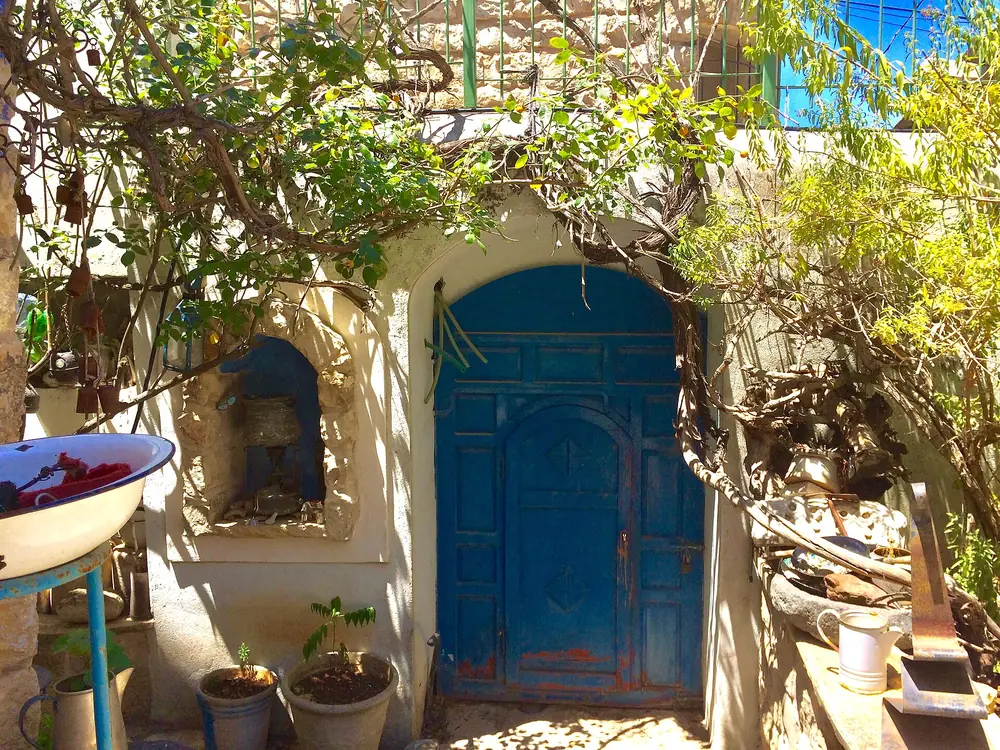
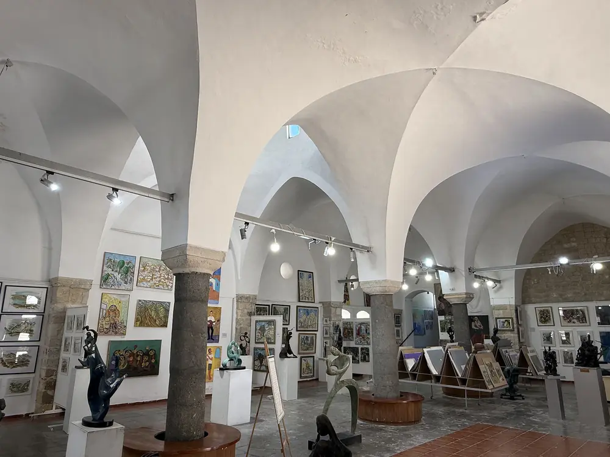
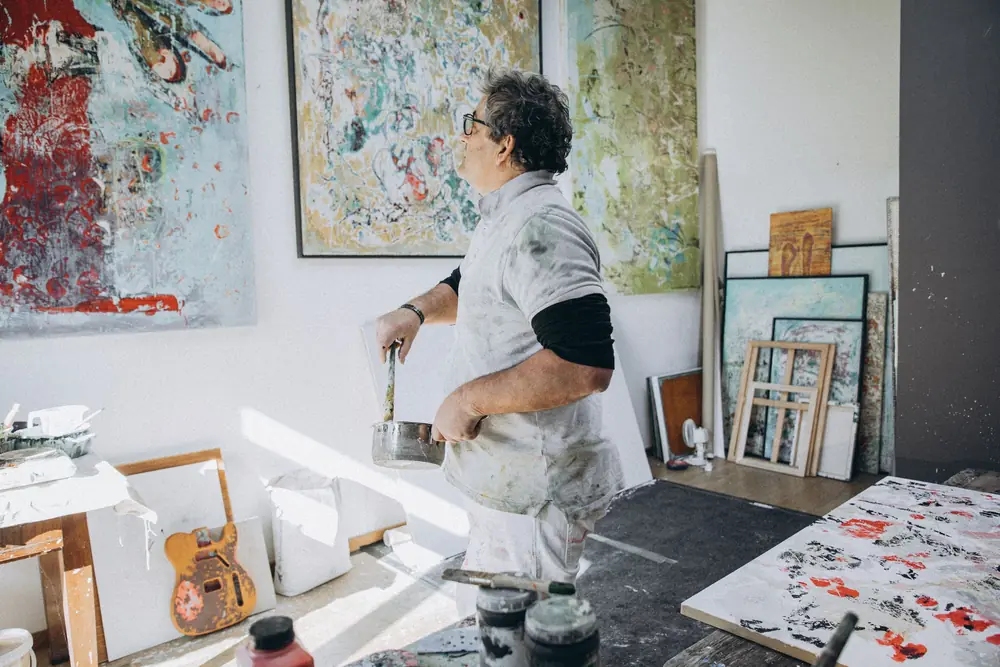
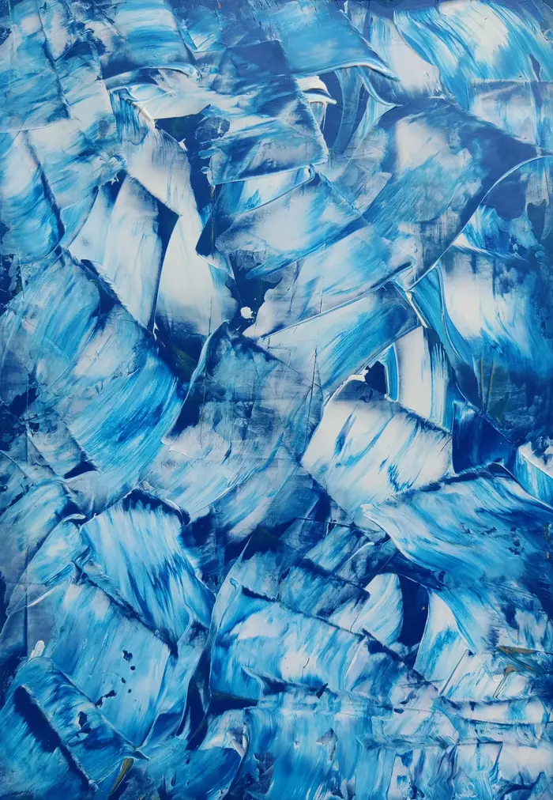
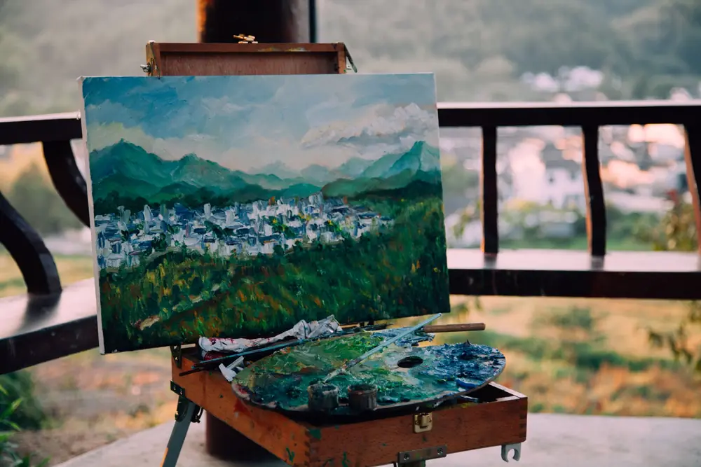
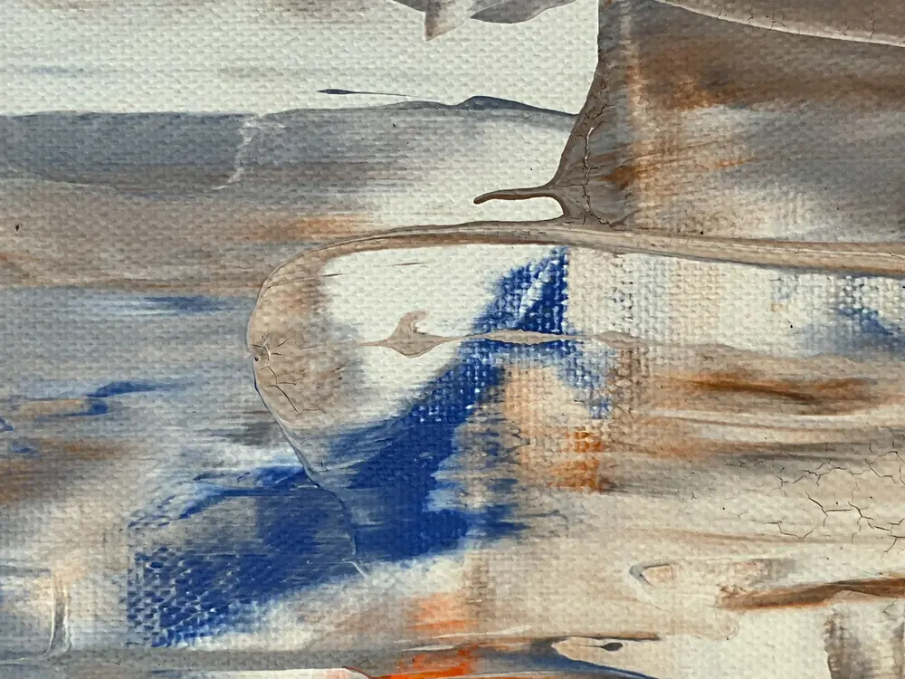
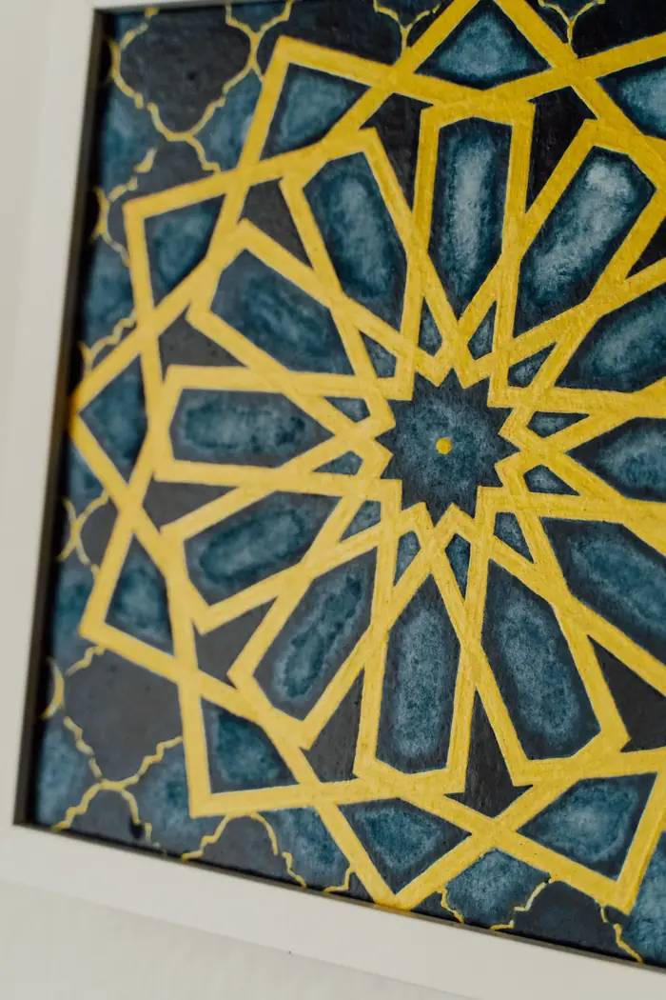
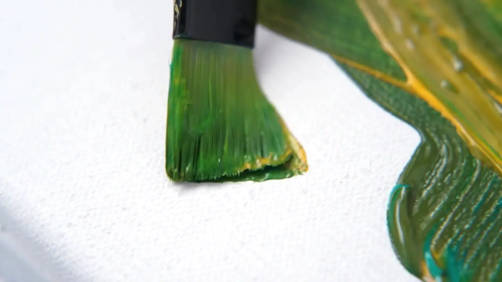
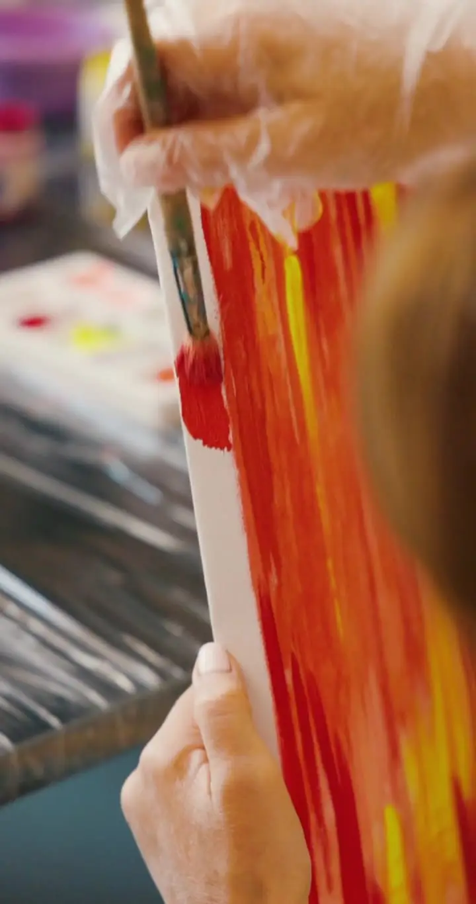

רובע האמנים · צפת העתיקה
אמנותשנולדהבסמטאותשל צפת
גלריה וסטודיו פתוח בבית אבן בן 200 שנה. ציורי מקור בגווני התכלת של צפת, סדנאות ציור בסטודיו ומשלוח מבוטח לכל העולם.

רובע האמנים · צפתהגלריה
האור של צפת, על בד.
אמנים מגיעים לצפת כבר מאה שנה בגלל האור, הגובה והשקט. בגלריה אפשר לראות את העבודות נוצרות: הסטודיו פתוח, המכחולים על השולחן, ואפשר לשאול כל שאלה על כל יצירה.

הגלריה
אולם קמרונות עם עבודות מקור

הסטודיו
מציירים מולכם, ואיתכם
עבודות
ארבע סדרות, עיר אחת
כל העבודות הן עבודות מקור חתומות, עם תעודת מקוריות. אפשר לשריין עבודה בהודעה ולהגיע לראות אותה לפני הרכישה. (בדמו: צילומי סטוק להמחשה)

סדרת תכלת
הכחול של הדלתות והקירות בצפת, מפורק לשכבות של צבע. עבודות אקריליק על בד, נבנות בשכבות דקות במשך שבועות.
- עבודת מקור חתומה + תעודת מקוריות
- אפשר להזמין עבודה בגודל מותאם

נופי הגליל
הר מירון, עמק החולה והבתים של צפת על הרכס. ציורי שמן שמתחילים בסקיצה בחוץ, מול הנוף, ומסתיימים בסטודיו.
- מסגור במקום, עץ אלון או ללא מסגרת
- אריזה מוגנת למזוודה, למי שטס הביתה

אבן ואור
טקסטורות של אבן ירושלמית וטיח ישן, עם קו אחד של כחול. עבודות בטכניקה מעורבת עם חול ופיגמנט.
- מתאים לחללים גדולים ולבתי אירוח
- ייעוץ התאמה לבית בתמונה, בלי עלות

גיאומטריה
דוגמאות מהאריחים והחלונות של בתי הכנסת העתיקים, בזהב ובכחול. מתנה מבוקשת לבית חדש ולחתונות.
- הקדשה אישית בגב העבודה
- אריזת מתנה ומשלוח לכל הארץ

כל עבודה מתחילה בסמטה אחת ובצבע אחד.
הסטודיו פתוח למבקרים
סדנאות
לצייר בצפת, גם בלי ניסיון
שעתיים בסטודיו עם צבעים, בד ומכחולים. יוצאים עם עבודה מוכנה לתלייה. מתאים לזוגות, למשפחות ולקבוצות.

כל החומרים כלוליםסדנה זוגית
שני כנים, בד אחד לכל אחד, יין או לימונדה. השעה הכי שקטה שתעבירו בצפת.
סדנה משפחתית
עבודה משותפת אחת על בד גדול, שכל המשפחה מציירת יחד. מגיל 6.
סיור אמן וסדנה לקבוצות
סיור בסמטאות רובע האמנים ואחריו סדנה קצרה בסטודיו. מתאים לקבוצות תיירים, לגיבוש ולבני מצווה.
מקומות מוגבלים בכל סדנה. שריון בהודעה אחת.
לשריון סדנה בוואטסאפקונים מכל מקום
מהסטודיו בצפת עד הקיר שלכם
רוב הקונים שלנו ראו את העבודה בביקור והחליטו אחר כך, מהבית. בשבילם יש אתר. We ship worldwide · English spoken.
משלוח לכל העולם
אריזה בארגז עץ, ביטוח מלא ומספר מעקב. בארץ: עד 5 ימי עסקים.
תעודת מקוריות
כל עבודה חתומה ומגיעה עם תעודה, תאריך ותיאור הטכניקה.
מסגור במקום
מסגרות עץ בעבודת יד, בהתאמה לעבודה ולבית. בדרך כלל מוכן תוך יומיים.
14 יום להחזרה
לא מתאים לבית? מחזירים בתוך 14 יום ומקבלים את הכסף, בלי שאלות.
צפת
הסמטאות שמחוץ לדלת


מבקרים מספרים
ביקורות
כאן יוצגו ביקורות אמיתיות מגוגל ומ־TripAdvisor. בדמו הזה הטקסטים הם לדוגמה בלבד ולא נכתבו על ידי מבקרים אמיתיים.
״נכנסנו לחמש דקות ויצאנו אחרי שעה, עם ציור קטן ועם המון סיפורים על צפת.״
״הסדנה הזוגית הייתה החלק הכי טוב בסוף השבוע בגליל. הציור כבר תלוי אצלנו בסלון.״
“We bought a painting on our trip and it arrived in Toronto two weeks later, perfectly packed.”
ביקור בגלריה
בואו לראות מקרוב
| ימים | שעות |
|---|---|
| א׳–ה׳ | 10:00–19:00 |
| ו׳ וערבי חג | 10:00–14:00 |
| מוצ״ש בקיץ | 20:30–23:00 |
רובע האמנים, צפת העתיקה (כתובת לדוגמה). חניה בחניון העירוני ברחוב ירושלים, 5 דקות הליכה. שעות הפתיחה באתר לדוגמה הן להמחשה בלבד.
איך מגיעים
רובע האמנים, צפת העתיקה
- כתובתרובע האמנים, צפת (כתובת לדוגמה)
- טלפון ווואטסאפ04-000-0000 (מספר לדוגמה)
- אימיילhello@example.com
- שפותעברית · English
- ניווט ב־Waze
שאלות נפוצות
לפני שמגיעים
אפשר לקנות עבודה מהאתר בלי להגיע?
כן. שולחים הודעה, מקבלים תמונות נוספות ווידאו של העבודה באור יום, ומשלמים בהעברה או בכרטיס אשראי בקישור מאובטח.
כמה עולה משלוח לחו״ל?
תלוי בגודל וביעד. לרוב העבודות לארה״ב ולאירופה המשלוח עולה בין ₪350 ל־₪900, כולל ביטוח וארגז.
צריך ניסיון בציור בשביל הסדנה?
לא. רוב המשתתפים לא החזיקו מכחול מאז בית הספר. מתחילים מסקיצה פשוטה ומתקדמים יחד.
הגלריה פתוחה בשבת?
הגלריה סגורה בשבת. בקיץ אנחנו פותחים גם במוצאי שבת.
אפשר להזמין עבודה בהתאמה אישית?
כן, בכל אחת מהסדרות. נפגשים או מדברים בווידאו, ומקבלים סקיצה והצעת מחיר לפני שמתחילים.